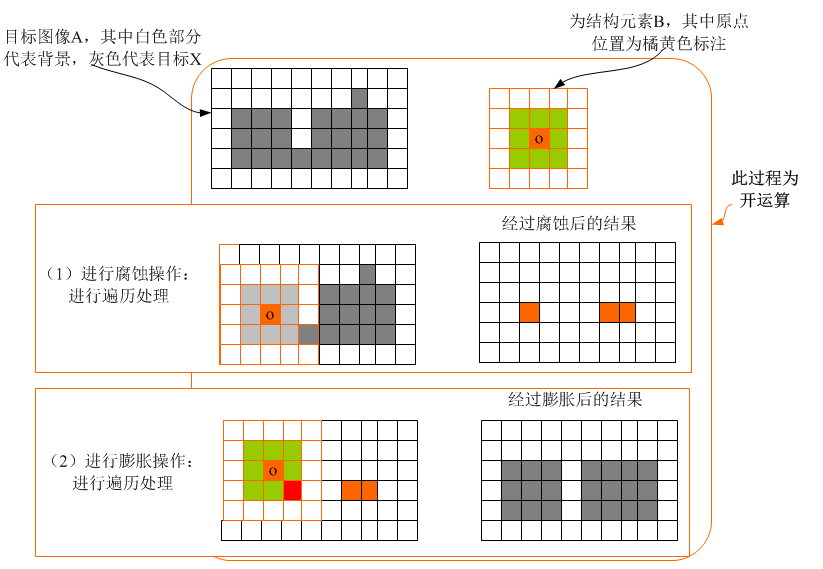
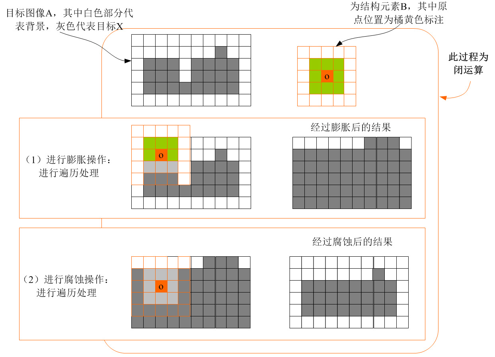

腐蚀和膨胀是对像素值大的部分而言的，即高亮白部分而不是黑色部分；以下图片前景物体为高亮像素，背景为低亮像素。
膨胀(dilated) 是图像中的高亮部分进行膨胀，领域扩张，效果图拥有比原图更大的高亮区域；操作的时候表现为相邻区域用极大值代替，高亮区域增加。
腐蚀(eroded) 是图像中的高亮部分被腐蚀掉，领域缩减，效果图拥有比原图更小的高亮区域；操作的时候表现为相邻区域用极小值代替,高亮区域减少。
开运算 先腐蚀再膨胀 ① 开运算能够除去孤立的小点，毛刺和小桥，而总的位置和形状不便。 ② 开运算是一个基于几何运算的滤波器。 ③ 结构元素大小的不同将导致滤波效果的不同。 ④ 不同的结构元素的选择导致了不同的分割，即提取出不同的特征。
开运算的效果图如下图所示：清除噪点，把一些太小的物体过滤。 
闭运算 先膨胀再腐蚀 ① 闭运算能够填平前景物体内的小裂缝，而总的位置和形状不变。 ② 闭运算是通过填充图像的凹角来滤波图像的。 ③ 结构元素大小的不同将导致滤波效果的不同。 ④ 不同结构元素的选择导致了不同的分割。
闭运算的效果图如下图所示：融合细微连接的图块，如果图像中存在断连物体，可以用此方法修复连接。 
Python Code
1 | import cv2 |
删除图像中小物体的Python API
1 | skimage.morphology.remove_small_objects(ar, min_size=64, connectivity=1, in_place=False) |
参考链接 https://blog.csdn.net/hanshanbuleng/article/details/80657148